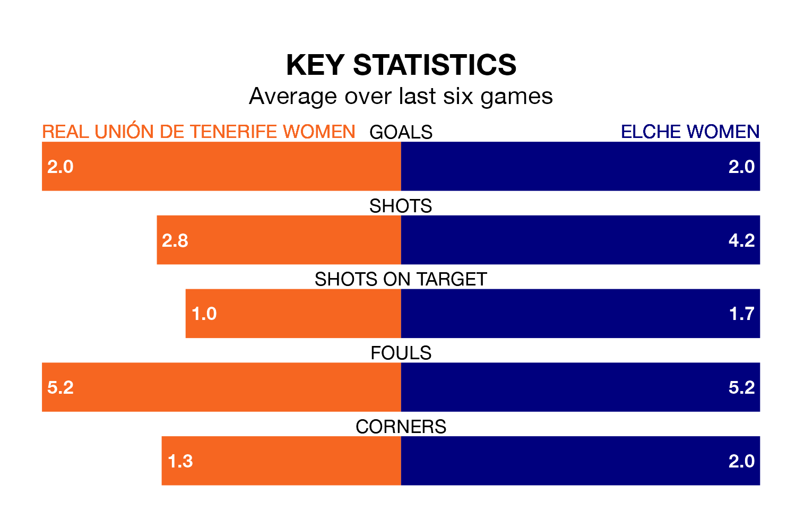

Real Unión de Tenerife Women host Elche Women on early Sunday on the back of five consecutive wins in Segunda Federación Femenina.
Unión de Tenerife Women have picked up 15 points from their last six games, and they face an Elche side who also won their last match, and have collected 10 points from the last possible 18.
With 31 goals in 15 games so far this season, Elche are the league's second-highest scorers with 2.1 goals per game. And they are conceding at an average rate, letting in 20 goals at a rate of 1.3 per game.
Unión de Tenerife Women are also above average scorers, with 1.6 goals per game, compared to a league average of 1.3. They have conceded 0.9 goals per game.
The hosts are sixth in the table after 16 games, of which they have won nine and drawn four, earning 31 points.
The away side are five places behind Unión de Tenerife Women in 11th, with seven wins and four draws putting them on 25 points.
Unión de Tenerife Women's last match was on Sunday, a 4-0 win against Unión Viera Women, with getting the goals for Unión de Tenerife Women.
Elche beat Levante II Women 2-1 last time out, on January 13, with on the scoresheet.
Updated: 06:13 (UTC), 18/01/24